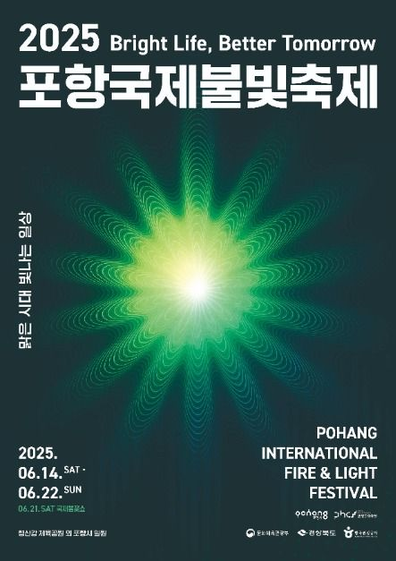

2025 포항 국제 불빛축제

- 기간: 2025.06.14. (토) ~ 2025.06.22. (일)
- 장소: 형산강 체육공원
- 요금: 무료
- 프로그램
◎ 6.14.(토) ~ 6.22.(일) 포항운하 라이트아트웨이 외
◎ 6.20.(금) 불빛콘서트, 데일리불꽃쇼 외
◎ 6.21.(토) 국제불꽃쇼 • 드론라이트쇼 • 그랜드피날레 외
- 소개: ‘불과 빛의 도시’ 포항에서는 해마다 대표적인 문화관광축제 '포항국제불빛축제'가 열린다.
포항국제불빛축제는 세계적인 철강 도시 포항을 상징하는 ‘빛’과 뜨거운 용광로를 상징하는 ‘불’의 이미지를 테마로 지난
2004년 포항시민의 날을 기념해 불꽃쇼를 개최한 것이 시작이다.
이후 국제규모 축제행사로 확대됐고 해외 유명한 불꽃팀들이 매년 참가하고 있다.
축제콘텐츠도 단순한 ‘불꽃’중심에서 탈피, 제작 공연과 불빛 퍼레이드 등 산업과 문화적 요소를 융합해 다채롭게 펼치는 화합의 축제이다.